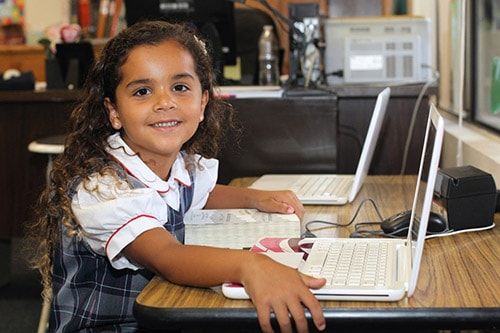
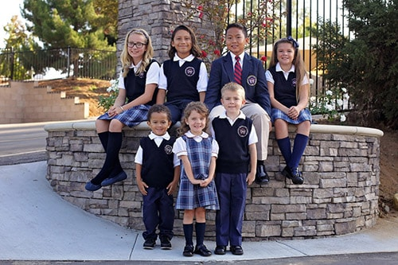
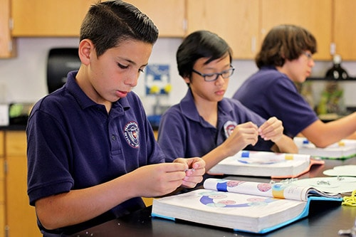
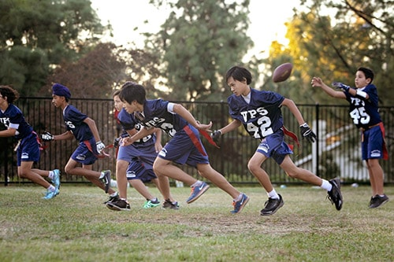
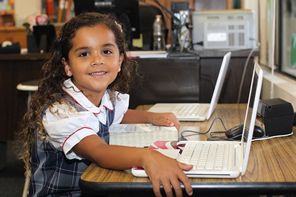
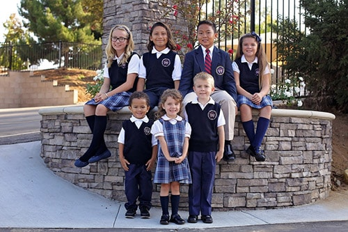
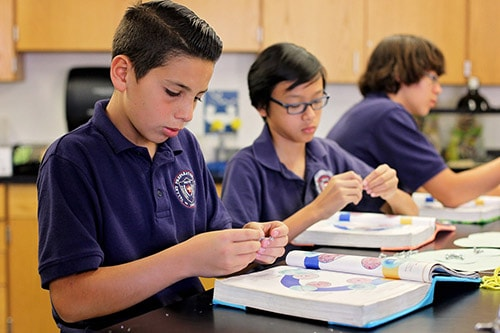
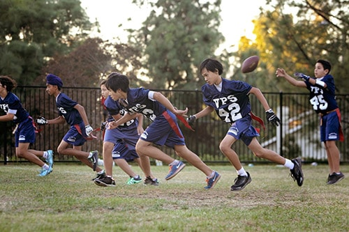

The Application Process
We welcome new students and their families to Valley Preparatory School. We're glad you're here! The information on this page will walk you step by step through our processes.
Steps to Apply
- Schedule a campus tour.
- Complete and return the application documents, including the application for admission and a copy of your child’s previous school records (if applicable).
- Schedule a classroom visit for your child, and pay the nonrefundable assessment fee of $100.
- The admissions committee will review your application and supporting documents.
- The director of admissions will notify you of your child’s acceptance, welcoming him or her into the community.
Admissions Documents & Forms
 

Readiness Assessment
Visiting the school is the most important step in the application procedure. During this full (or partial) day visit, your child will experience a typical day at Valley Prep, allowing the teachers to observe his/her interaction with other students. Your child will also complete an assessment that includes age-appropriate reading, writing, and math exercises. The results of this assessment are not the sole determining factor in a child’s acceptance or non-acceptance; however, it does provide important feedback to ensure we place your child in the appropriate grade for optimal success.
Criteria for Acceptance
In addition to the readiness assessment, other important factors determining acceptance include the following: a review of previous school records (if applicable), feedback from the previous school (if applicable), the child's date of birth, and the child’s own expression of interest in joining Valley Prep (older children will complete a Prospective Student Questionnaire). During the visit, a teacher observes to determine how well the child interacts with other children in the classroom as well as the degree of cooperation and interest he/she shows in learning.
- Preschool students must be three years of age by September 1 of the year they are applying to attend school.
- Pre-Kindergarten students must be four years of age by September 1 of the year they are applying to attend school.
- Kindergarten students must be five years of age by September 1 of the year they are applying to attend school.
- Upon acceptance, please submit your child’s birth certificate, Immunization record, Physician’s Report (including TB clearance) and Request for Transcript form.
- The Enrollment Contract will be sent to you electronically and will be due along with the registration fee of $1,000 to reserve your child’s seat (payable in the front-office).
- Register with Smart Tuition, LLC to setup a tuition billing plan.
- Complete the Emergency Information Form.
- Preschool & Pre-Kindergarten families must also complete the Childcare Packet.